Cung đình Huế
Tổng mặt bằng
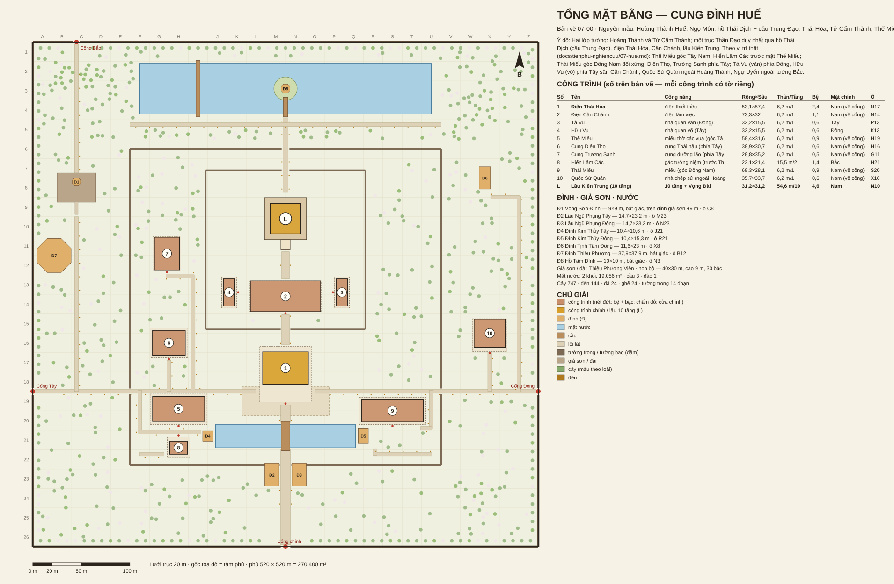
Điện Thái Hòa 太和殿
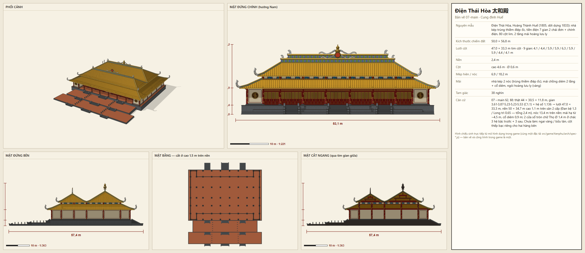
Điện Cần Chánh 勤政殿
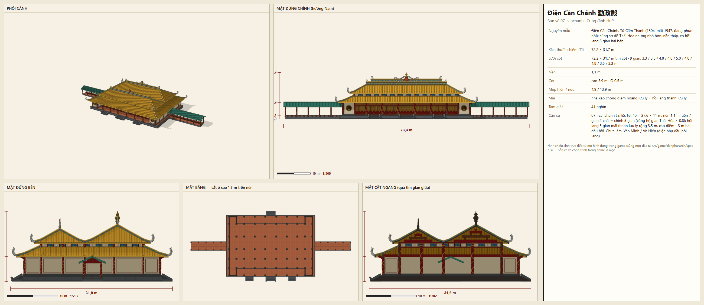
Tả Vu 左廡
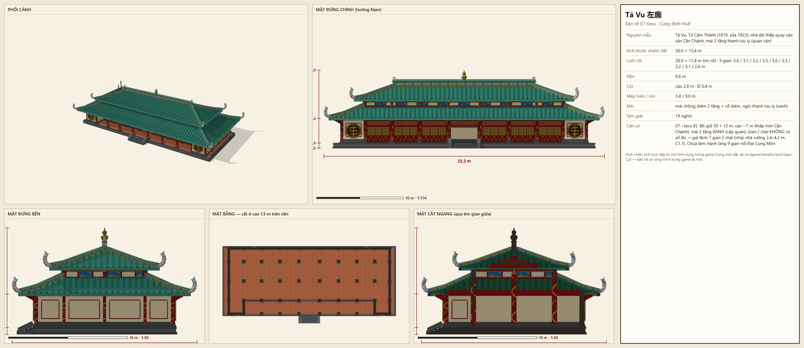
Hữu Vu 右廡
Thế Miếu 世祖廟
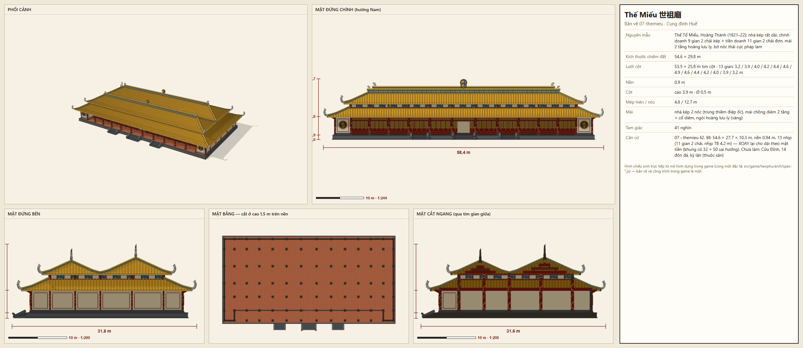
Cung Diên Thọ 延壽宮
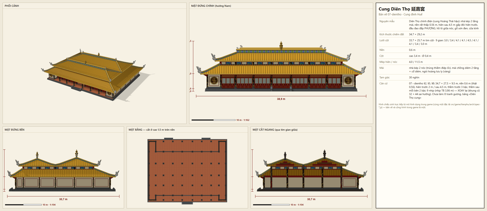
Cung Trường Sanh 長生宮
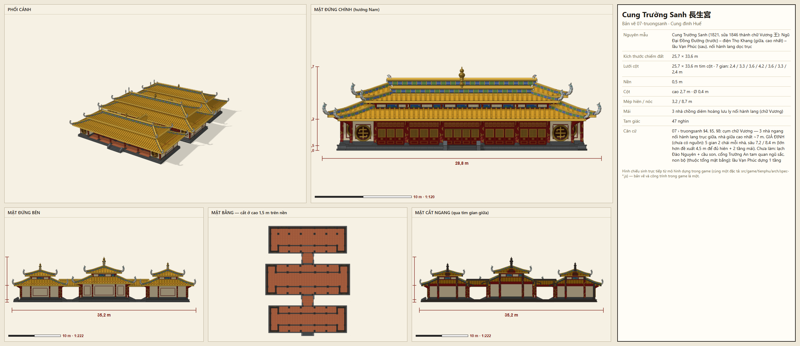
Hiển Lâm Các 顯臨閣
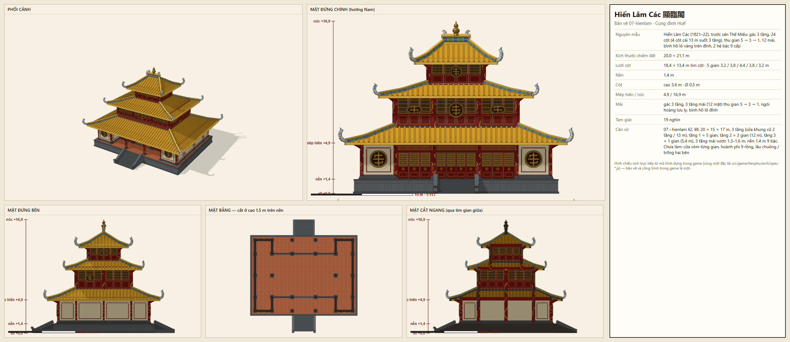
Thái Miếu 太祖廟
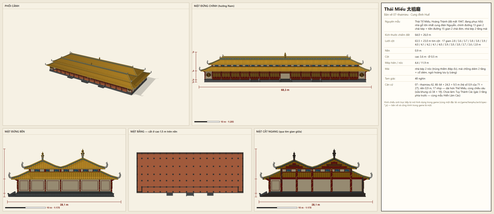
Quốc Sử Quán 國史館
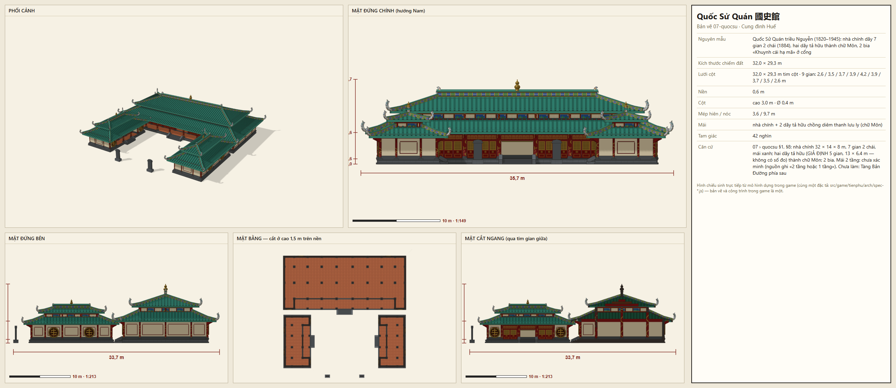
Lầu Kiến Trung (lầu 10 tầng)
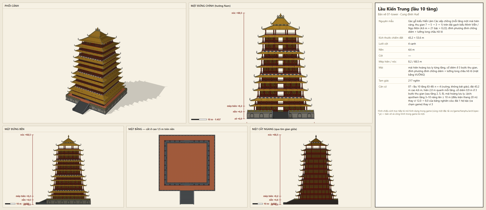
Vọng Sơn Đình
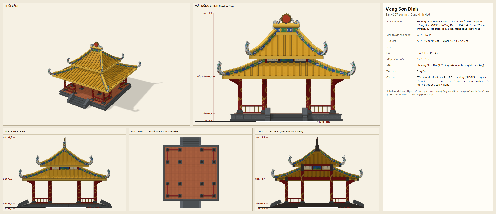
Lầu Ngũ Phụng Tây (lầu trống)
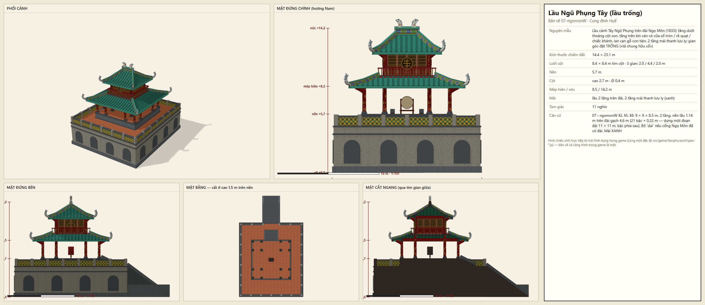
Lầu Ngũ Phụng Đông (lầu chuông)
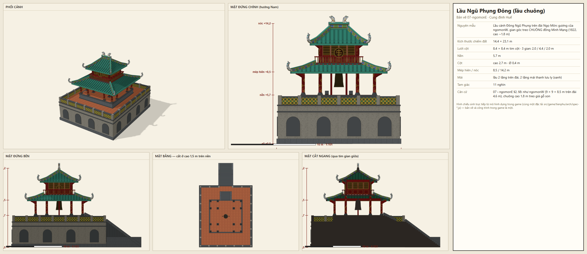
Đình Kim Thủy Tây (thủy tạ)
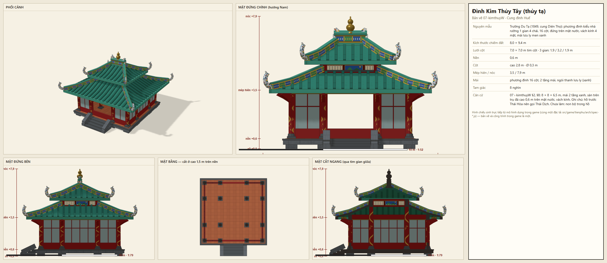
Đình Kim Thủy Đông (thủy tạ có nhà vỏ cua)
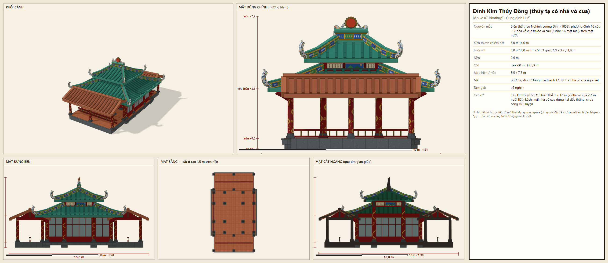
Đình Tịnh Tâm Đông (Thanh Tâm thủy tạ)
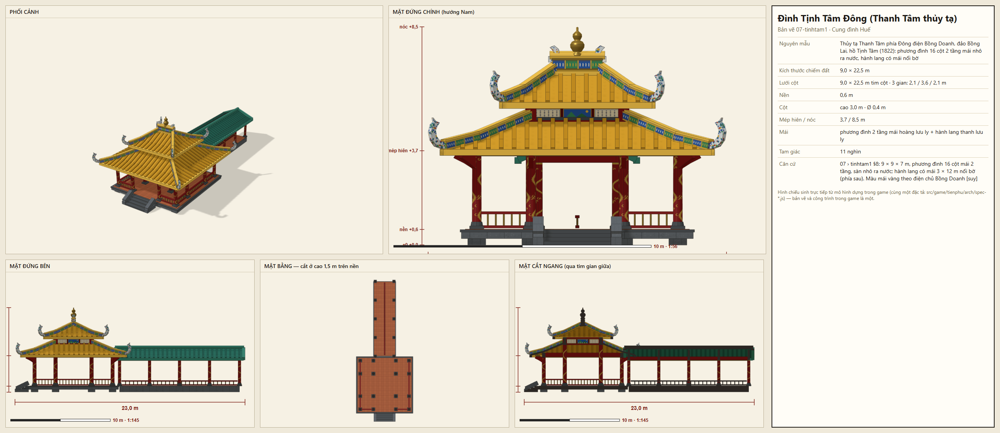
Đình Thiệu Phương + hồi lang chữ Vạn
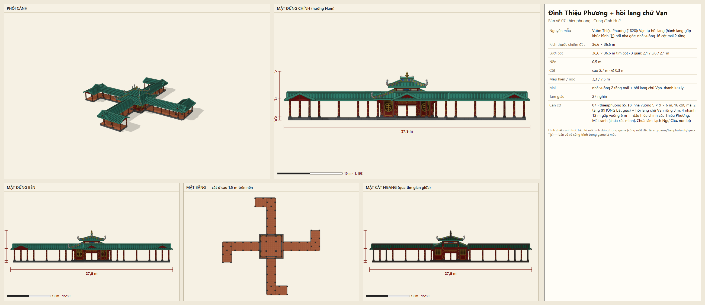
Hồ Tâm Đình
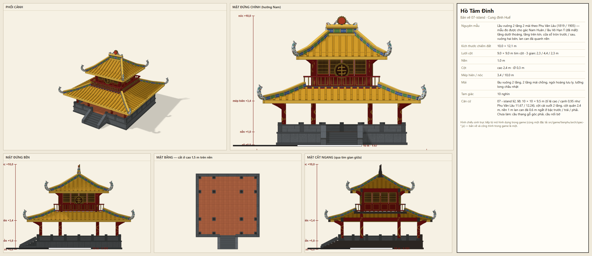